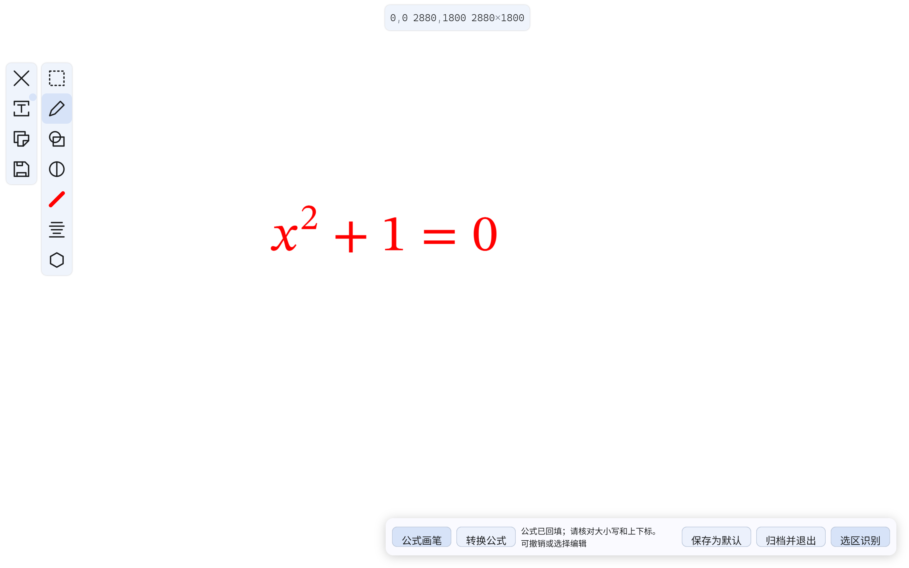

截图批注，
退出就归档。
在截图上写下思路，按 Esc 保存。用公式画笔书写，双击即可排版回填；也能框选识别到剪贴板。
截图与批注可离线使用。公式识别需联网，用邀请码登录即可，无需填写 API。
查看使用方法
解压后，按这几个键开始。
-
启动并截图
把 ZIP 完整解压到可写文件夹，运行
AnnotationCapture.exe。按 Alt + W 全屏截图并直接书写；按 Ctrl + Alt + S 框选后继续批注。默认红笔、隐藏放大框。滚轮调粗细，“保存为默认”记住当前画笔颜色与粗细，两个入口共同使用。
-
写完，直接归档
使用画笔、文字、形状和橡皮擦完成批注。按 Esc 或 Ctrl + Enter，保存带批注的截图选区并退出。
归档按日期保存。写入失败会保留画布，修复保存位置后可重试。
-
公式画笔，双击排版
在工具栏选择“公式画笔”，写完一条公式后双击空白处，或按 Ctrl + Shift + T。默认按 STIX2 排版，可在设置中改为 New Computer Modern。
转换后继续批注，可撤销恢复笔迹；选择公式可编辑 LaTeX、移动和缩放。此操作不会复制或提前退出。
-
选择输出格式，再识别
首次使用邀请码登录，后续自动恢复。批注后按 Ctrl + Shift + Enter，选择原始 LaTeX、Markdown 公式或 Mermaid 等输出，再框选笔迹并识别。
先归档完整截图，再识别选区笔迹。等待期间若剪贴板已有新内容，结果会保留供手动复制。
-
屏幕原文，框选即 OCR
按 Ctrl + Alt + O，选区结束后直接识别并复制。自动输出普通文字、Markdown、Mermaid 或
$…$公式，无需先批注。
旧版用户，直接覆盖更新。
从托盘退出旧版
先完成批注，再从系统托盘右键菜单选择“退出”。只关闭设置窗口，软件仍会留在后台。
新版解压到原目录
下载新版 ZIP，将全部内容解压到原程序目录并覆盖同名文件，保持
AnnotationCapture.exe的路径不变。保留AnnotationCapture-data和自定义归档目录，不必卸载或清空旧版。继续使用原快捷方式
重新启动后，历史归档、目录设置和快捷键继续保留。从 0.1.1 升级首次识别需要邀请码；登录后再次覆盖更新，无需重复登录。使用自定义数据目录的用户继续使用原快捷方式参数。
预览版的使用边界
识别后，请核对字母大小写和上下标。
公式画笔单独验收双击、撤销重做、编辑字体、失败重试和取消；真实 API 的转写准确性另行记录。原笔迹随归档保留，识别结果可编辑。
- 当前提供 Windows x64 版本，未做代码签名；Windows 可能提示发布者未验证。
- Math Academy 专用输出尚未接入。公式画笔支持两种内置字体，暂不支持任意系统字体。
- 托盘“退出”立即关停，不等待保存；请先按 Esc 保存需要保留的批注。